Base de conocimiento y Work Orders¶
Qué es¶
Dos módulos distintos que suelen usarse juntos: la base de conocimiento centraliza el know-how operativo para que los agentes no dependan de la memoria de "expertos" individuales, y los work orders (órdenes de trabajo) modelan un flujo de trabajo que pasa de un equipo a otro hasta resolverse — por ejemplo, un pedido que pasa de ventas a finanzas, a almacén, a logística, y de vuelta al agente que originó el caso.
En resumen (según la página de introducción del módulo): el sistema soporta múltiples tipos de work order, múltiples campos personalizados y circulación entre múltiples grupos de trabajo; al crear uno, puede quedar asignado directamente a su creador o pasar sin asignar al grupo correspondiente. El módulo se usa en conjunto con campañas de marketing outbound o con atención al cliente, según el flujo de cada equipo — el mismo resumen aparece tanto en la fuente en inglés como en la china.
Cómo se usa¶
Base de conocimiento¶
- Ve a Base de conocimiento → Base de conocimiento y selecciona el equipo.
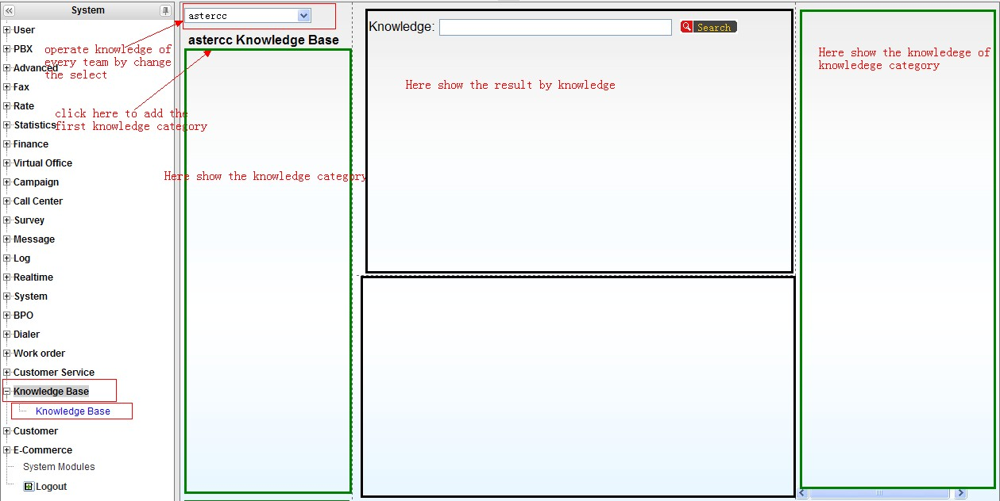
- Crea categorías de conocimiento (y subcategorías, arrastrando para anidar u ordenar).
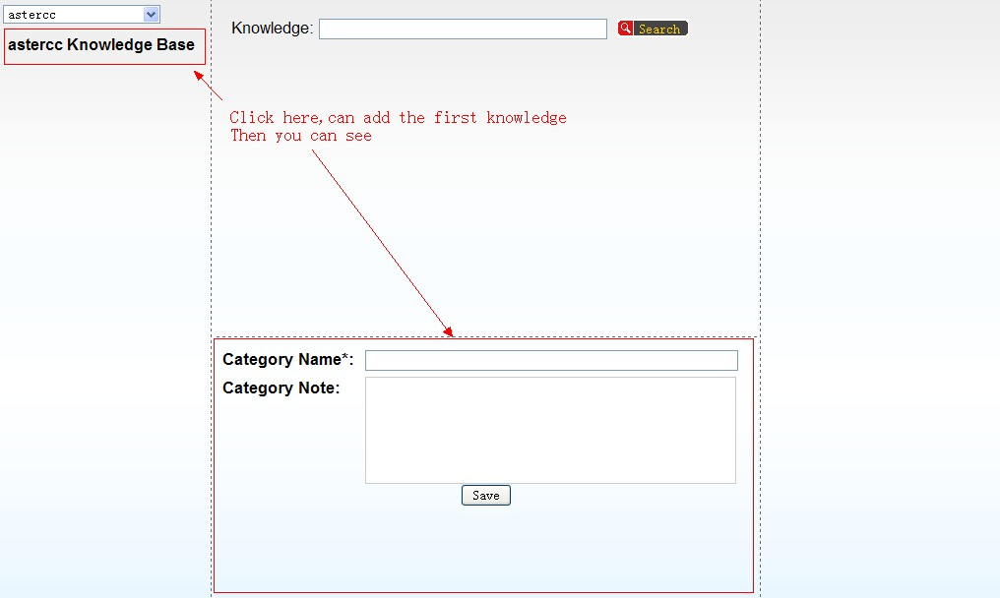
- Dentro de una categoría, agrega un artículo de conocimiento con:
| Campo | Qué define |
|---|---|
| Nombre | Identifica brevemente el artículo |
| Etiquetas | Para búsqueda rápida por tema |
| Estado | Borrador (solo lo ve su creador), Publicado (visible para quien tenga permiso de ver la base), Pendiente de aprobación (esperando revisión de alguien con permiso de publicar) o Rechazado (no pasó la revisión) |
| Archivo adjunto | Material de soporte descargable |
| Contenido con formato / contenido en texto plano | El texto en formato enriquecido se muestra al leer el artículo; el texto plano es lo que se indexa para búsqueda |
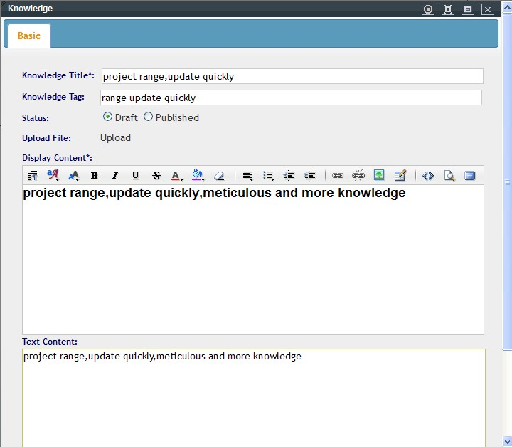
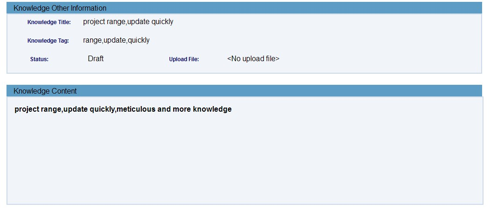
- Los agentes pueden buscar por texto libre o hacer clic en una etiqueta para filtrar artículos relacionados.
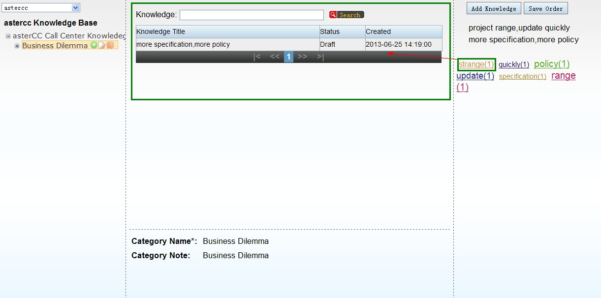
- El permiso por rol controla, para cada cuenta, si puede: agregar categorías, agregar artículos, editar, ver, eliminar, y publicar (un artículo enviado por alguien sin permiso de publicar queda pendiente de revisión hasta que alguien con ese permiso lo apruebe).
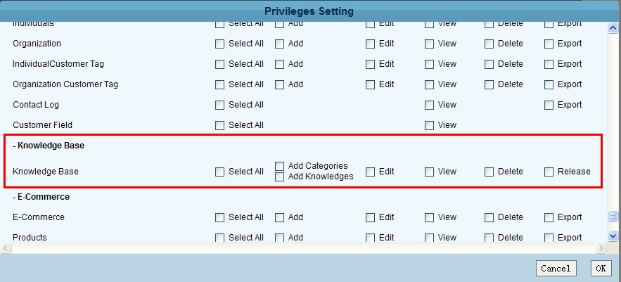
Work Orders¶
Antes de usar el módulo, hay que definir una plantilla de work order — el flujo que seguirá ese tipo de caso.
- Ve a Gestión de work orders → Work order → Agregar y define:
| Campo | Qué define |
|---|---|
| Equipo | A qué equipo pertenece esta plantilla |
| Alcance de flujo | Entre qué grupos de agentes puede moverse el work order (si no se usa flujo automático) |
| Flujo inicial directo | Si el primer grupo del flujo es el mismo que crea el work order, si se asigna directo a ese grupo o espera asignación manual |
| Permiso de edición | Quién puede modificar contenido, responder, o cambiar el estado — "todos" o "solo el dueño y el jefe de grupo" |
| Retener agente en el flujo | Si al pasar de un grupo a otro, se prioriza asignar al mismo agente que lo creó o que lo tuvo antes, antes de dejarlo en la bandeja general del siguiente grupo |
| Acción de cierre | Qué pasa al cerrar el último nodo: nada, crear automáticamente un work order de seguimiento, o dejar que el agente decida |
| Copia de correo por defecto | Direcciones que se notifican en cada cambio del work order |
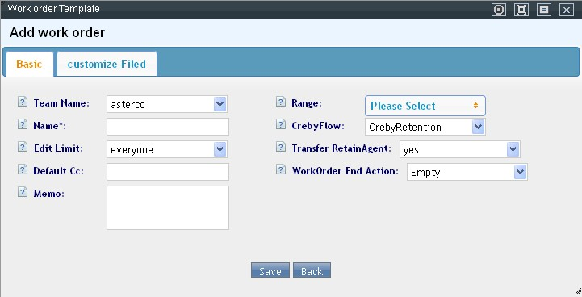
- Define campos personalizados para capturar información específica del proceso (texto corto, selección, texto largo, archivo, fecha, fecha y hora).
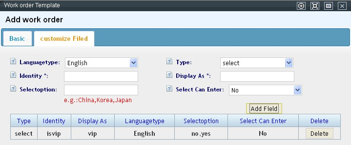
- Si el proceso siempre sigue el mismo camino, configura el flujo automático: al guardar la secuencia de grupos, el work order avanza solo de un grupo al siguiente al completarse cada paso, y se cierra automáticamente al terminar el último.
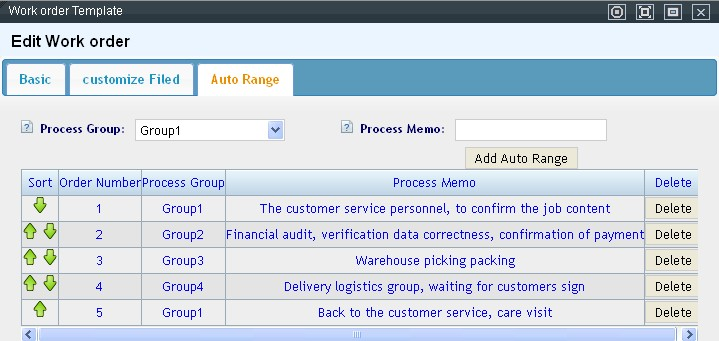
Pantalla "Mis work orders"¶
Al entrar con work orders pendientes, el sistema abre automáticamente esta pantalla (también accesible desde el menú). Organiza los casos en cuatro categorías:
| Categoría | Qué muestra |
|---|---|
| Mis work orders | Todos los asignados al agente actual |
| Mis creados | Todos los que el agente creó |
| Work orders del grupo | Solo visible para el jefe de grupo — todos los del grupo |
| Creados por el grupo | Solo visible para el jefe de grupo — todos los que el grupo creó |
Dentro de cada categoría se filtra además por Nuevo, Recién completado e Histórico completado (mismas tres tablas de archivo mencionadas abajo). El jefe de grupo puede asignar o reasignar manualmente desde aquí seleccionando el work order y usando el botón Asignar — no se pueden asignar juntos work orders de grupos distintos.
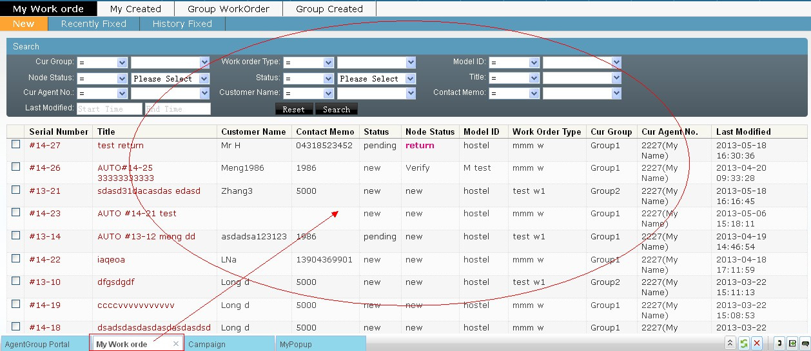
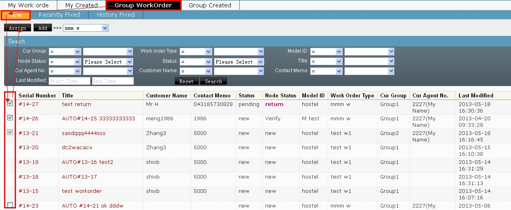
Dónde se crea un work order¶
Un work order se puede originar desde cuatro lugares: 1. Pantalla emergente de atención al cliente entrante, si el resultado de la llamada está vinculado a esta plantilla. 2. Gestión de llamadas perdidas, para dar seguimiento a una llamada no atendida. 3. Pantalla emergente de una campaña de marketing saliente, si el resultado de la llamada está vinculado a esta plantilla. 4. La pantalla "Mis work orders", donde un jefe de grupo puede crear uno manualmente para su equipo.
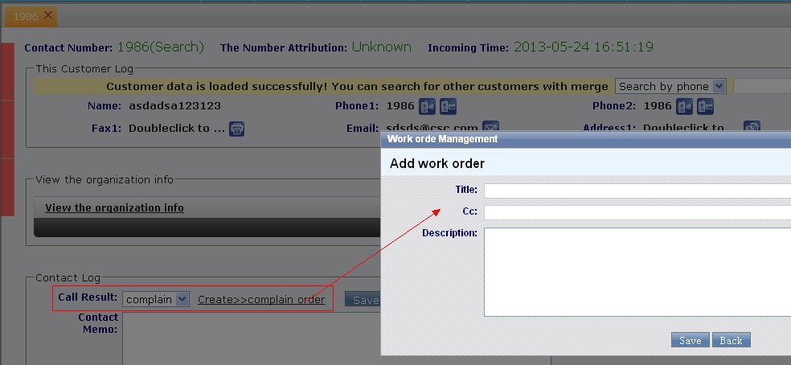
Reglas de asignación por grupo¶
Cuando la plantilla usa flujo manual (no automático), cada grupo de agentes involucrado define su propia regla de asignación — solo el jefe de ese grupo puede editarla:
| Regla | Cómo asigna |
|---|---|
| Manual | El jefe de grupo asigna caso por caso desde "Mis work orders" |
| Por orden de número de agente | Automático — reparte a los agentes en orden ascendente de número, solo entre los que tengan work orders nuevos sin asignar |
| Por menor carga | Automático — prioriza al agente con menos work orders sin completar en ese momento |
Ambas reglas automáticas pueden acotarse a solo agentes conectados o a todos los agentes del grupo (estén o no en línea). También se define si el nodo requiere aprobación del jefe de grupo antes de avanzar al siguiente — si no se aprueba, el work order vuelve al agente como "en seguimiento".
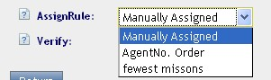
Estados de un work order¶
| Estado general | Significado |
|---|---|
| Nuevo | Recién creado, sin procesar |
| En proceso | Alguien lo está trabajando |
| Completo | Cerrado |
| Estado del nodo actual | Significado |
|---|---|
| Nuevo | Recién llegó al nodo, sin agente asignado o sin empezar |
| En proceso | El agente lo está trabajando |
| Devuelto | Rechazado por el siguiente nodo (pide correcciones), o el propio agente lo devolvió a su jefe de grupo por no poder resolverlo |
| En revisión | El agente terminó su parte y espera aprobación del jefe de grupo |
Los work orders se archivan en tres tablas independientes — sin completar, completados recientes, y completados históricos — con migración automática entre ellas: sin completar → completados recientes al cerrarse, y de ahí a históricos tras superar el tiempo de retención configurado (Sistema → Configuración → Procesamiento de grandes datos → Tiempo de retención de work orders), medido desde la última modificación.
Qué puede hacer un agente al procesar un work order¶
Desde el detalle del work order (accesible por doble clic desde cualquiera de las tres tablas), el agente puede:
- Editar los campos personalizados definidos en la plantilla (si tiene permiso).
- Adjuntar archivos de soporte.
- Ver el historial completo: quién hizo qué y cuándo, con las respuestas anteriores.
- Consultar el historial de contacto y de compras del cliente asociado, sin salir de la pantalla.
- Originar llamada, SMS, correo o fax al cliente desde una barra de accesos rápidos siempre visible.
- Al finalizar su parte, elegir el estado del nodo: en proceso, completo, devolver al nodo anterior, devolver a su propio grupo (pedir ayuda al jefe), o —si tiene permiso de aprobación— aprobar/rechazar el trabajo de otro agente.
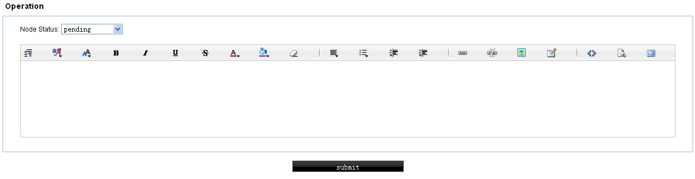
Si el work order ya está completo, nadie puede modificarlo — solo consultar.
Referencia rápida¶
| Tarea | Dónde |
|---|---|
| Crear categoría/artículo de conocimiento | Base de conocimiento → Base de conocimiento |
| Controlar permisos de la base de conocimiento | Cuentas y permisos → Gestión de roles → Base de conocimiento |
| Crear plantilla de work order | Gestión de work orders → Work order |
| Vincular resultado de llamada a un work order | Configuración de resultados de llamada (atención al cliente / campaña) |
Fuentes¶
raw/zh/模块使用说明/知识库/知识库.txtraw/zh/模块使用说明/知识库.txtraw/zh/工单.txtraw/zh/模块使用说明/工单管理/工单.txtraw/zh/模块使用说明/工单管理/分配规则.txtraw/zh/模块使用说明/工单管理/我的工单.txtraw/zh/模块使用说明/工单管理/工单记录.txtraw/en/module_manual/knowledgebase/knowledgebase.txtraw/en/work_order.txtraw/en/module_manual/work_order.txtraw/en/module_manual/work_order/assign_rule.txtraw/en/module_manual/work_order/my_workorder.txtraw/en/module_manual/work_order/work_order.txtraw/en/module_manual/work_order/workorder_log.txt